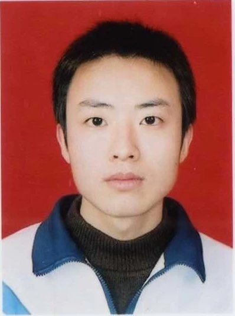

Welcome! My name is Cheng Wang. I am currently a research scientist in System and Machine Learning Group, NEC Laboratories Europe. Before that, I received my Dr.rer.nat degree from Hasso-Plattner-Institute, University of Potsdam in 2017. There, I was supervised by Prof. Dr. Christoph Meinel, my research topic was "Multimodal Deep Learning". My research interests are machine (deep) learning and their applications to language and vision tasks, e.g., multimodal information retrieval, multimodal recommender systems.